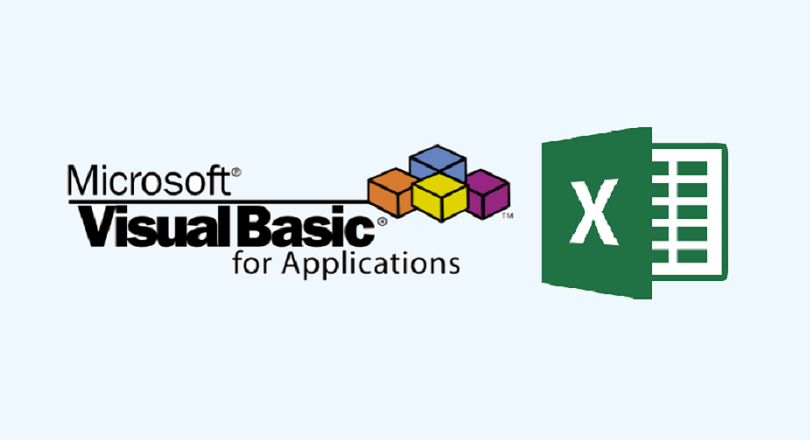

El objetivo de los macros es el de facilitarte las tareas de Excel que realizas de forma reiterada. Imagínate que por tu trabajo o las tareas que sueles realizar
con el programa, cada dos por tres tienes que estar haciendo de forma mecánica un conjunto de acciones que te lleva bastantes clicks y vueltas a la aplicación.
Con los macros, puedes crear un automatismo que realice en orden todas esas acciones que siempre sueles hacer una detrás de otra. Una vez configurado este macro,
podrás ejecutarlo todas las veces que quieras en todo momento.
Cuando creas un macro, Excel grabará todos los clicks del ratón o las pulsaciones de las teclas que realices durante el proceso de creación, y es esto lo que luego
repetirá. Después de crear el macro, también podrás modificarlo para realizar pequeños cambios con los que ajustar mejor o perfeccionar las tareas que realizas.
¿Cuáles son las ventajas de usar macros en Excel?
Entre las ventajas de utilizar los macros está la reducción de la tasa de errores, ya que los pasos que hay que dar están grabados y hay menos opciones de que te
equivoques en alguno de ellos. También ayudan a reducir el tiempo de trabajo al acelerar algunos procesos, y aumentan la utilidad de Excel haciendo más accesibles
algunas acciones o pudiendo simplemente crear atajos de teclado para ellas.
Esta herramienta emplea el lenguaje de scripts Visual Basic for Applications (VBA), permitiendo al usuario crear nuevas funciones (algoritmos) a la hora de realizar
cálculos. De esa manera, se accede a importantes beneficios, como:
Ahorro de tiempo de trabajo: al automatizar esas tareas rutinarias y/o agregar nuevas funciones a la plantilla de Excel, la persona ahorra tiempo en la ejecución de
su trabajo.
Reducción de la tasa de errores: el 90% de las hojas de cálculo tienen errores o fallas asociadas al ingreso manual de datos y a la copia de importes incorrectos.
Utilizando macros, ese riesgo se reduce drásticamente.
Aumento de la utilidad de Excel: como ya se señaló, con Visual Basic el usuario no solo puede programar macros, sino que también puede desarrollar nuevas funciones
de acuerdo con sus necesidades de trabajo.
Te invitamos a que observes el siguiente video:
|